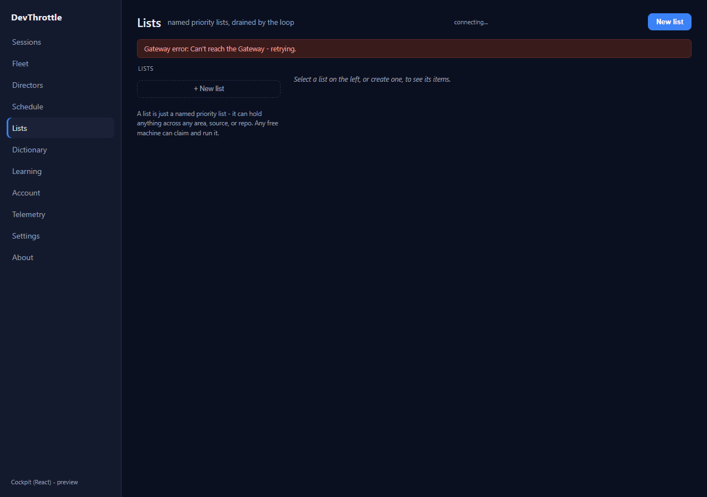
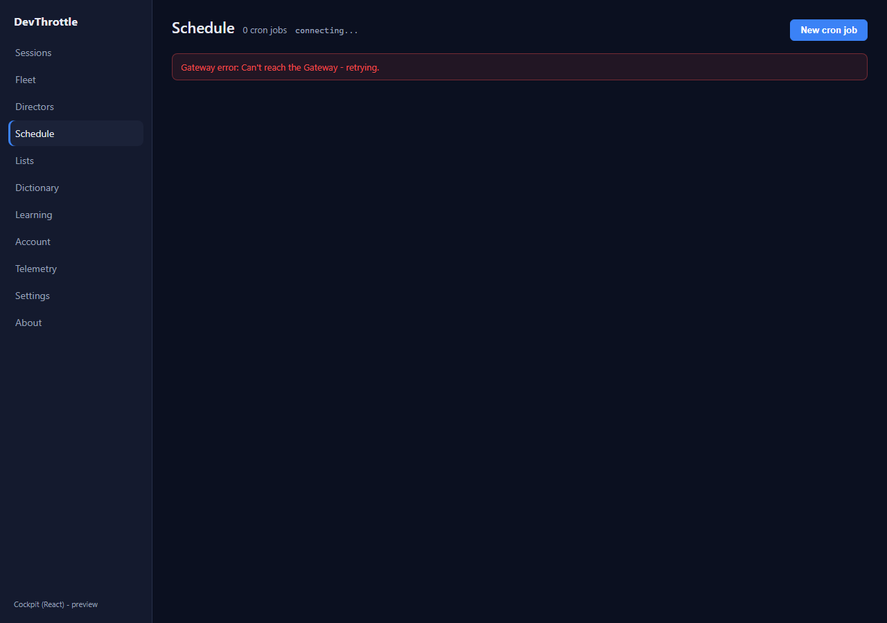
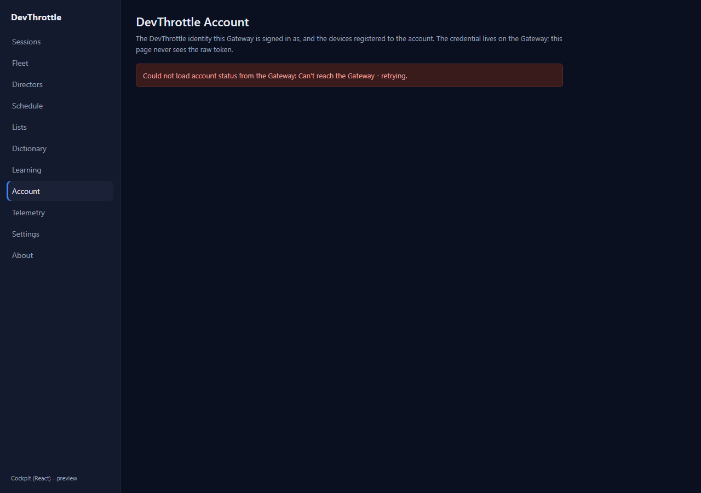
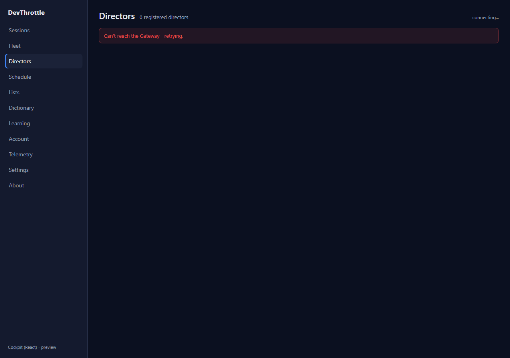
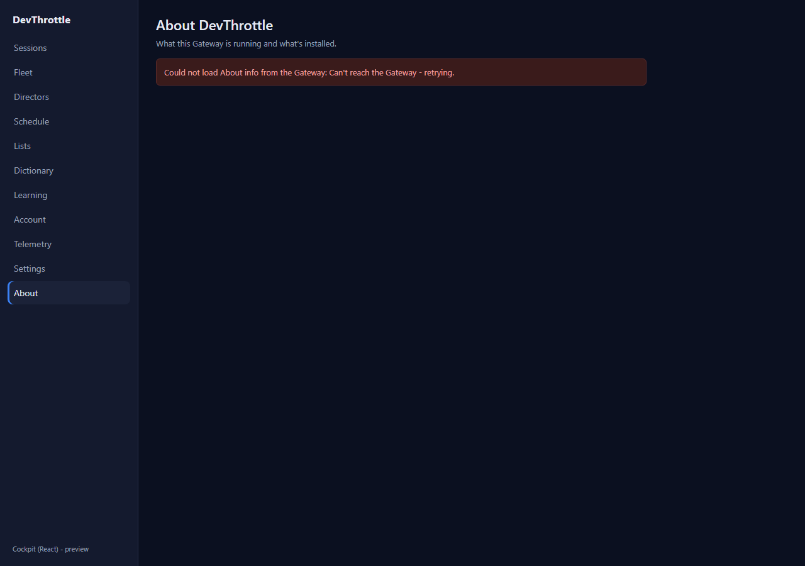
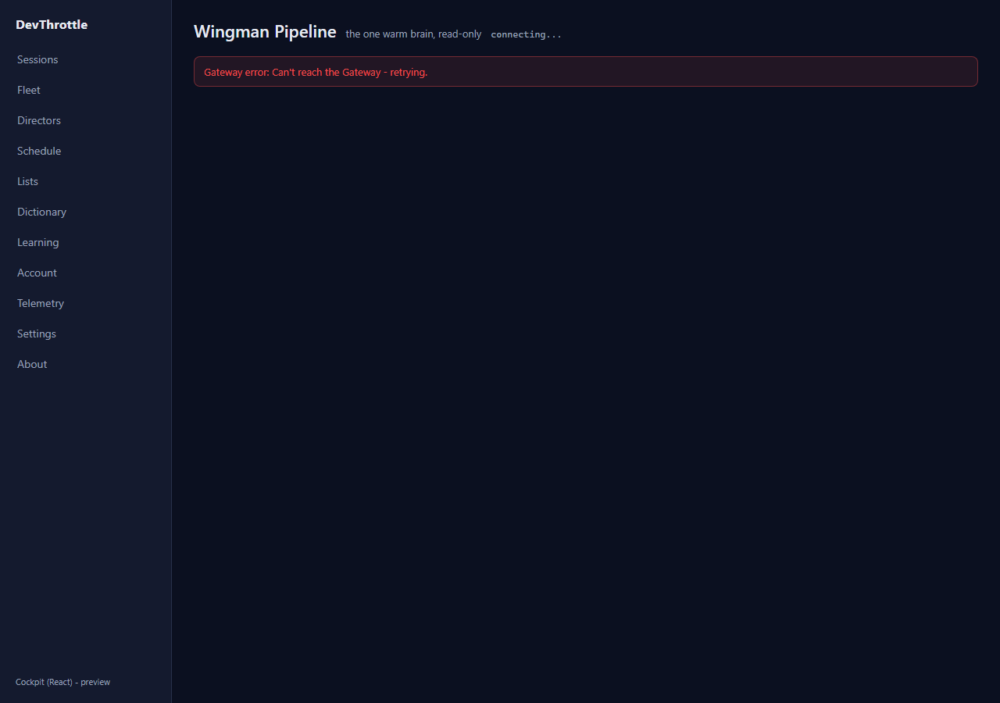
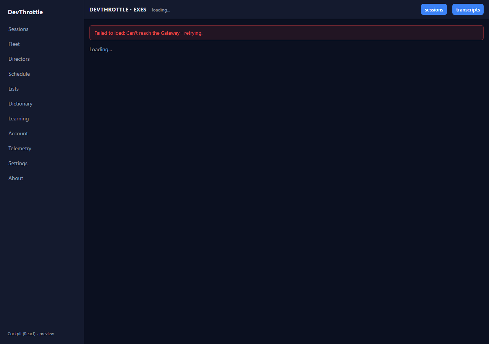
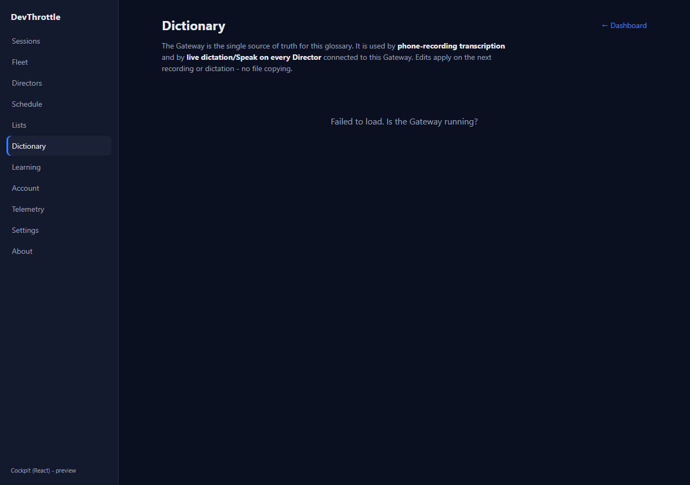

PR: #1042 Branch: issue-1028-cockpit-error-states Epic: #967
The prior hand-off wired the shared gatewayErrorMessage() helper into only the fleet, directors,
sessions, and telemetry views. QA proved acceptance criterion 2 ("No page shows a raw
GET /path failed: NNN string") still failed: under a forced 503, Lists rendered
Gateway error: GET /lists failed: 503, Schedule rendered
Gateway error: GET /cron/jobs failed: 503, and Account rendered
Could not load account status from the Gateway: GET /account/status failed: 503.
Criteria 1 (telemetry save), 3 (Director-detail error state), and 4 (cold roster) passed and were not touched.
Every page and component in apps/cockpit/src that renders a Gateway error to the user was
audited and routed through the existing gatewayErrorMessage() helper (or, where a page keeps an
action-context prefix such as "Add item failed:", the raw detail inside the prefix was replaced by the helper's
friendly line). No page now renders a thrown GatewayError.message or the browser's bare
"Failed to fetch" verbatim.
18 files changed (mechanical routing only, no behaviour/logic change beyond the message text):
errText() helper now delegates to
gatewayErrorMessage(), routing all of that page's messages in one place.learningClient.askDevThrottle()'s
network-exception branch now returns the friendly transport line instead of the browser's raw
"Failed to fetch".Already-correct on the branch and left unchanged (verified): FleetView, DirectorsView, DirectorDetailView, SessionsView (helper already applied), and TelemetryView (fixed friendly boolean flags - criterion 1, not regressed).
| # | Criterion | Result |
|---|---|---|
| 1 | Failed telemetry save keeps the toggle, inline "couldn't save", retry in place. | PASS (unchanged - not touched) |
| 2 | No page shows a raw GET /path failed: NNN string. | PASS (this fix - proven on 8 sampled pages below) |
| 3 | Director-detail failure is a clear error, not stuck "loading". | PASS (unchanged - not touched) |
| 4 | Cold-start roster shows the friendly transport message. | PASS (unchanged - not touched) |
Method: the cockpit dev server driven by Playwright with request interception - every fetch/xhr
Gateway call fulfilled with HTTP 503 (documents/assets pass through). For each page the rendered
body text was scanned for the forbidden pattern (GET|POST|...) /path failed: NNN and for
a bare "Failed to fetch". All 8 sampled pages: no leak (see leak-scan.json).
| Page | Before (QA) | After (this fix) |
|---|---|---|
| Lists | Gateway error: GET /lists failed: 503 | Gateway error: Can't reach the Gateway - retrying. |
| Schedule | Gateway error: GET /cron/jobs failed: 503 | Gateway error: Can't reach the Gateway - retrying. |
| Account | Could not load account status from the Gateway: GET /account/status failed: 503 | Could not load account status from the Gateway: Can't reach the Gateway - retrying. |
| Directors | (already friendly) | Can't reach the Gateway - retrying. |
| About, Wingman, Exes, Dictionary | would leak identically | no raw string (scan clean) |

Lists - friendly banner

Schedule - friendly banner (was GET /cron/jobs failed: 503)

Account - friendly banner

Directors - friendly banner

About - friendly banner

Wingman - friendly banner

Exes - friendly banner

Dictionary - friendly banner
npm run build (tsc --noEmit + vite build) - built OK.npm run lint (eslint .) - clean, no warnings.gatewayError.test.ts 8/8).dotnet build src/CcDirector.Gateway/CcDirector.Gateway.csproj -p:RunCockpitBuild=true - Build succeeded, 0 Warning(s), 0 Error(s).dotnet build cc-director.sln - Build succeeded, 0 Warning(s), 0 Error(s).No drift. No architecture or security-posture change: the fix reuses the existing
gatewayErrorMessage() user-facing-message helper and changes only which string reaches the DOM. If
anything it strengthens security rule intent (DT-05 family) by ensuring no internal method+path+status is ever
shown to the user. No architecture_manifest.yaml or security_profile.yaml change.
Acceptance criterion 2 is now satisfied across the whole cockpit surface, criteria 1/3/4 are preserved, and the full build gate is clean. I believe this is finished.